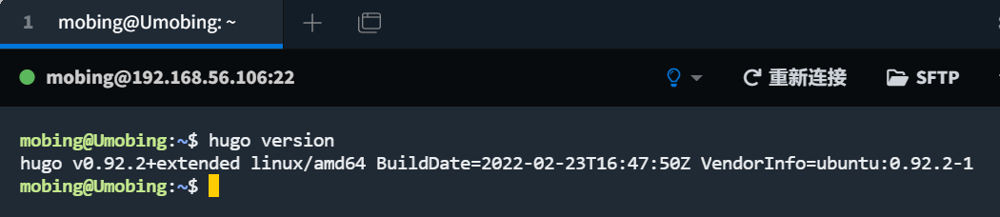

LinuxBigWork
Linux学习笔记
常用小知识
- vim编辑器
操作类型 操作键 功能 翻页 Ctrl+F/B 向下/上翻动一整夜内容 行内快速跳转 数字键“0”/“$”键 跳转至行首/行尾 行间快速跳转 gg/G/#gg 跳转到文件的首行/的末尾行/中的第#行 行号显示 :set nu/:set nonu 在编辑器显示/取消显示行号 删除 x/dd/#dd 删除光标处的单个字符/当前光标所在行/从光标处开始的#行内容 替换 r/R 替换单个/多个字符 复制 yy/#yy 复制当前光标所在行的内容到剪切板/从光标处开始的#行内容 粘贴 p/P 将缓冲区中的内容粘贴到光标位置处的下一行/粘贴到光标位置处之前 - 文件系统命令
操作指令 功能 备注 pwd 显示当前工作目录的绝对路径 cd 更改工作目录路径 几个特殊符号：. 代表当前所在目录；.. 代表当前目录位置的上一层目录；~ 代表家目录 mkdir 创建目录 -p：若路径中的目录不存在，先创建目录 ls 列出目录和文件信息 -l：以详细信息的形式展示出当前目录的文件 rmdir 删除空目录 touch 创建空文件、更改文件时间 cp 复制文件或目录 -a：通常在复制目录时使用，它保留链接、文件属性，并复制目录下的所有内容。其作用等于dpR参数组合。 mv 文件和目录改名、移动文件和目录 rm 删除文件或者目录。一般使用rm -rf删除目录 -f：强制删除，即使文件属性设为只读，也直接删除，无需逐一确认
大作业过程
-
Linux安装git

-
socket编写程序


-
Hugo相关
- 配置Hugo相关环境 hugo安装过程图  hugo版本号
- Markdown语法编写网页内容
- 使用Hugo
心得体会
首先我得感谢舍友和同学的帮助（点名表扬18870和世霖），没有他们我确实没办法完成这个大作业（指瞎抄代码）；其次我要感谢老师——的ppt，没有它们我敲代码也没啥大用。最后就是自己的一些胡思乱想：我觉得这个hugo比web开发那边要好用很多，用md文件进行模板编制真的很爽。